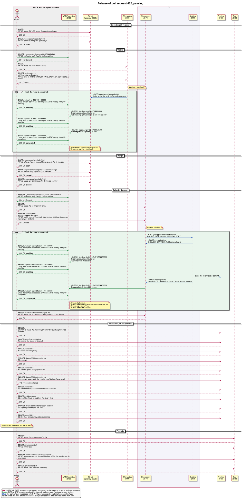

The Release, Message by Message
- Red: ARTIE's HEART requests to each party, numbered as the steps of its trace, and their answers.
- Green: RISE, ARTIE's replies read until answered, and each party's signed answer to them, worked out from each reply's change of state between two reads.
- Blue: the parties' own messages, which ARTIE never sees: the watch's looks, and Jenkins' part, from the CI wrapper's log of the notifications it got.
- Yellow notes: the links an answer handed over. Every address after an entry came from one.
- Drawn by PlantUML from the run's trace (
sequence.mjs). Tap the diagram for the full view: drag to move, scroll or pinch to zoom.
